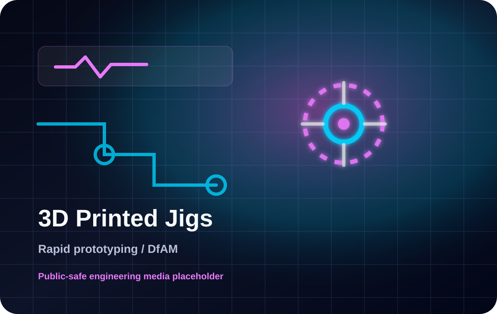

Project Overview
Printed tooling and prototype parts used for fit checks, assembly trials, mechanism validation and fixture development.
3D Printing / Prototyping
Printed tooling and prototype parts used for fit checks, assembly trials, mechanism validation and fixture development.

Printed tooling and prototype parts used for fit checks, assembly trials, mechanism validation and fixture development.
Early tooling ideas needed fast physical validation before investing in machining or fabrication.
Created CAD models, selected print direction/material thinking and tested printed parts in practical use.
Modeled, printed, checked fit, reviewed durability and iterated geometry based on practical handling.
Reduced design uncertainty and improved decision speed before final fabrication.
Public-safe photos, diagrams and project evidence are being prepared. Confidential factory details are not published.
Printed jigs are useful when design intent, material limits and production load are respected.
Only simplified descriptions and public-safe media should be shown. Do not publish PLC programs, HMI source files, wiring diagrams, exact drawings, dimensions, customer names, factory layouts, production figures or private company documents.